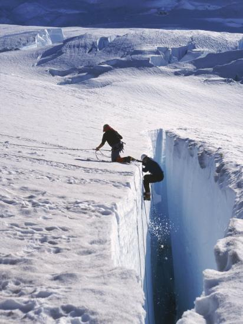

Unknowing Enthusiasm
Once upon a time, but actually this happens a lot so lots upon a time. A person came out ready for an adventure. Off in the distance there was a great party. A crowd of people on a hilltop not far away. She thought this would be a great place to start the adventure. Join those people on the hill and perhaps make her way towards the mountains in the distance.
The ground ahead was a little bumpy looking, but mostly flat. She could see that there were a few others on the path to the hilltop and she decided to go with them. She saw that there were some people stood at the base of the hill and they were calling out to the group of adventurers but they were too far to hear their words.
The beginning of the journey was quite simple the adventurers found the ground easy to traverse. And with each step those on the hilltop came closer and their words became clearer.
"What out for the bogs!"
"Take care of your shoes!"
"Always bring a pen!"
The adventurers heard these bits of knowledge and filed them away. They weren't super useful in that moment but the words were heart felt it was clear they meant something to those at the base of the hill.
It didn't take long to realize that those warnings would not be of use for quite sometime. After another few miles the flat ground fell away and between the adventurers and the very base of the hill was a massive and seemingly impassible crevasse.
Those at the other side was gesturing wildly and pointing towards a spot where there was a path to climb down.
"It's not that bad!"
"You can get down there!"
"Watch out for the loose stones!"
So the adventurers decide to follow the directions and climb down the side of the crevasse. Though it looks scary and deep and not at all the fun adventure they'd envisioned. A few of the group peer out of the abyss and change their mind. They decide to go back. Some choose to go down a different way. But there's still a decent group heading for the indicated decent.
The group goes slowly climbing down the side of the crevasse. And those on the other side are still calling out.
"Watch out for that boulder below!"
"Adjust your feet to the right!"
"Move just a hair to the left!"
But with their backs to the other side it's hard to tell what they're talking about.
A few people lose their grip and fall. Some get part way down and decide to climb back out. Some climb down fast but are not there when the group hits the bottom.
The bottom of the crevasse and it's a vast and densely grown jungle. There's a river, and a bog, and wild animals and long grasses. There's lots of ways to get lost, broken and hurt. Those above are still calling but it's harder to make out the advice this far down.
Something about a rope ladder, and something about a tree fort? But regardless the group moves forward.
To be continued.....